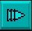

Amos Professional Manual Contents Index
the Monitor
The horizontal line between the Program Listing Window and the Information Window can also
be dragged up and down, in order to enlarge one of these windows and reduce the other to a
minimum of three lines.
The control keypad
Each of the push-buttons in the control keypad is triggered via the mouse. Here is au
explanation of the controls.
Scrolling the screen output

The four directional arrows are used to scroll the reduced screen in the graphic output
window. The central button in this group selects the screen to be displayed, starting
from screen zero, and then in order through any additional screens until screen zero is
displayed once more.
Initialising the Monitor

This is the Initialisation button, and it has exactly the same effect as using [Run] from
the Editor.
Firstly, a [Test] of the program is performed. If AMOS Professional encounters an error, the
faulty line will be displayed in the program listing window. If the testing process is successful
and no errors are found, a Default command will be given and a program pointer will be
initialised at the first instruction in the program that is being monitored.
The [INIT] button must be triggered before the program listing can be checked, step by step.
One-Step Control
 Clicking on this button tells the Monitor to examine the next instruction, give a report and
then go back and wait for your next action. The black program cursor will now be pointing
to the next instruction, and the Information Window will also show the next instruction and
give any parameter list.
Clicking on this button tells the Monitor to examine the next instruction, give a report and
then go back and wait for your next action. The black program cursor will now be pointing
to the next instruction, and the Information Window will also show the next instruction and
give any parameter list.
Slow-Run Control
When this button is triggered, the Monitor will interpret instructions one at a time, and re-
draw the whole display after each examination. By using this option, you can follow the
progress of the program listing in slow motion. To stop the slow-run, click on the stop button.
Stop Button
The stop button brings the interpretation process to a halt, and returns you to the Monitor.
Pressing [Ctrl]+[C] has the same effect, and so does a "break point", which is explained
below. If a non-trapped error is discovered, it will be displayed in the Information Window and
you will also be taken back to the Monitor.
Normal-Run Control

This button will run the program from the Monitor and update the graphic display every
50th of a second, allowing a faster speed of operation. The program itself and the Monitor
information windows will not be updated until a stop in the program. To stop the process,
simply use the stop button.